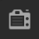

💻 Rendering, lighting and materials¶
Open the rlm_assignment.blend file and you'll see several objects in the scene: a ground plane, a plateau, Suzanne (the monkey head) and 3 knots.
The goal of this assignment is to place some lights, set the camera parameters to your liking, add materials to the objects and render the final image. We'll do this in steps.
Tip
To view your result with realistic lighting and materials use the Shading pie menu, which opens with the Z key:
- Option
Renderedshows realistic lighting and materials, with slower interaction - Option
Solidshows simple colors and lighting, with faster interaction
Lighting - Creating light sources¶
To see what we are doing in Rendered shading (Z-Rendered) we first need to add the lighting.
- Add one or two sun lights by either using the 3D view menu in the header (
Add > Light > Sun) or useShift-A > Light > Sunin the 3D view - Try to position and rotate the lights so that they light the objects under a bit of an angle (
GandRkeys). - Before we change the appearance of the lights we need to switch to
Renderedusing theShadingpie menu (Z > Rendered) - Now adjust the
ColorandStrengthsettings under the Object Data properties tab in the properties panel, perhaps try to give one the lights a warm yellowish sun-like color and the other a more less strong blueish and cold color. - In the same properties panel tab, try to adjust the
Angle(orRadiusorSizefor the other light types) of the sun light and see how it affects the shadows. Small angles (or radii or sizes) create hard shadows, which are ideal to see minor details and large angles (or radii or sizes) create soft shadows, which is more suited to reduce the overall contrast and make it less straining on the eye. - Now in the same properties editor tab, try out some different lamp types (
Point,Sun, ...) to experiment with the different lighting effects they produce.
Bonus: If setting up the lamps is too cumbersome, you can go to the World tab in the properties editor and click the little globe drop-down menu button at the top and select the HDRIWorldLighting. This will enable predefined environment lighting using a 360 image of somebody's living room. Do make sure that you de-activate ( in the Outliner) or remove the lamps to see the full effect.
in the Outliner) or remove the lamps to see the full effect.
Camera - Setting the starting point of the light paths (or rather camera paths)¶
With the lighting setup, we can now see what each of the camera settings does. Or from the light ray paths perspective: configure the starting point of the light rays.
- First you need to be in the camera view to be able to see the changes of the camera settings by selecting with the
Viewpie menu (`-button) theView Cameraoption or through the 3D view menu in the header (View > Viewpoint > Camera). The former way is a toggle interaction so when you are already in the camera view you will toggle it off. - Try changing the camera's focal length. For this, select the camera Camera
and go the
Lenssettings in the Object Data properties tab in the properties panel. There you can find theFocal Lengthsetting, try for example values 18, 50 and 100 and see what effect this has. Notice that when you set theFocal Lengthto a lower value you might see clipping (the scene is cut off from a certain distance). This can be changed by setting theClip Startin the sameLenssection to a lower value, e.g. 0.01. Finally set the focal length to the desired value. - Next we are going to bring the focus to a chosen object in the scene with the depth of field settings. For this, select the camera, scroll down in the Object Data properties tab in the properties panel to the
Depth of Fieldsettings. Check the check-box beforeDepth of Fieldto activate the depth of field. Now try to set theFocus on Objectvalue to theSuzanneobject and test different values for theAperture > F-Stopsetting. - When you are done, disable depth of field again. This makes the material editing easier.
If the lighting gives the desired effect looking through the configured camera then you can give the objects the look you want with materials in the next section.
Materials - How will the light paths bounce?¶
To design how the light is reflected or refracted off the objects you are going to give each object a different material.
- For each object (including ground plane and plateau):
- Select the object and go to the Material tab in the properties editor.
- In the Material tab click the
Newbutton. - Then under theSurfacesection set theSurfaceparameter to eitherDiffuse BSDF,Glossy BSDForPrincipled BSDF. - Try to play with the material settings
RoughnessandColor(the latter is calledBase Colorfor the Principled BSDF)
Bonus: When you feel that the roughness and the color alone didn't give you the look that you want with the Principled BSDF then also try and have a look at the other, in the slides, mentioned settings, Metallic, Transmission, IOR and Subsurface.
Rendering - Creating your final image¶
Lights, camera, (materials,) set aaaaaaand action!... Now you will set the desired render settings to generate the final image!
- Go to the properties editor and set the following settings:
- Render properties tab 
- Set
DevicetoGPU Compute. If your device doesn't have a (powerful) GPU set it toCPU. Samplingsection: setRender > Samplesto 128Light Pathssection: setClamping > Indirect Lightto 1.0- Output tab
Formatsection: setResolutionto 1920x1080, 100%.
- Set
- If everything is set, press
F12.
Now the Image editor will replace the 3D view and your image will slowly be rendered in parts called "tiles".
- Finally when the image looks the way you want don't forget to save it! In the Image editor go to the
Imagemenu and click onSave As...and choose a location and save the image.
Performance - Speed up those renders¶
Now that we know how to improve the look of the scene and save the final render we will improve the speed of the render.
- Write down the render time shown in the upper left corner of the Image editor (Example upper right corner:
Frame:1 | Time:00:09:84 | Mem:6.09M, Peak: 164.29M). - Close the Image editor if it is still open.
- Change the following settings in the Render properties tab :
*
Samplingsection: setRender > Samplesto 32 *Samplingsection: turn on the denoiser with,Render > Denoise. - Now press
F12again to render another image.
As you can see when comparing the render time of our previous render and this one, this one is significantly faster.
Render quality when using denoise features
One thing to keep in mind is that when you are using the denoise feature you will lose a little detail.
Noise Threshold
Blender 3.0 introduced another feature to reduce the render times called Noise Threshold. Turning it on and giving it a value between 0.1 to 0.001 will prematurely terminated the sampling when a pixel reaches a certain noise threshold and by doing so reduces the render time.